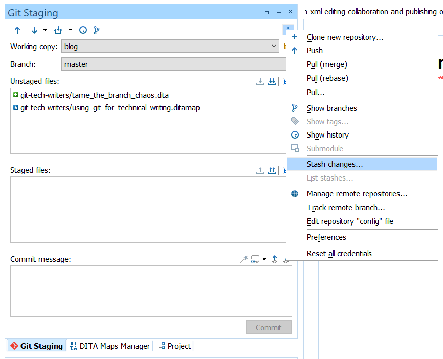
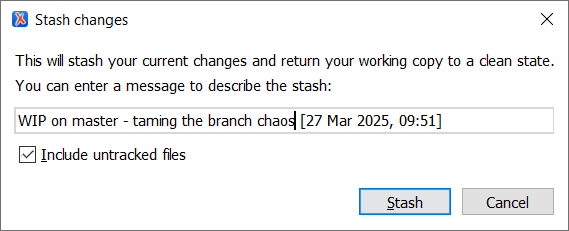
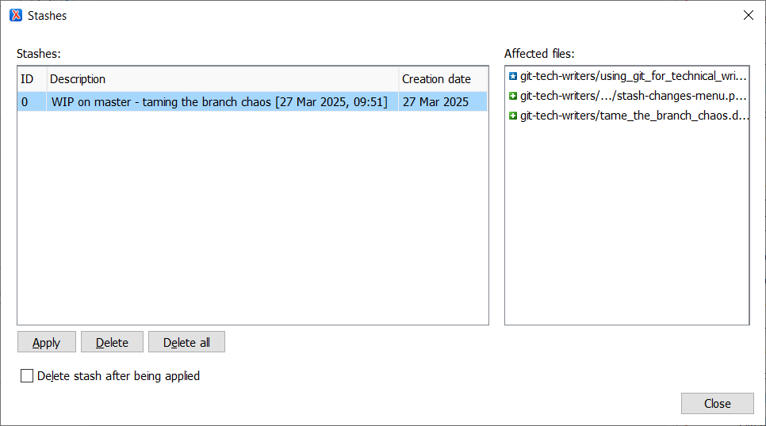
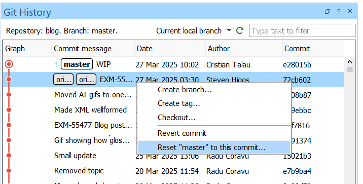
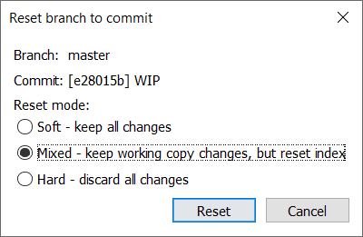
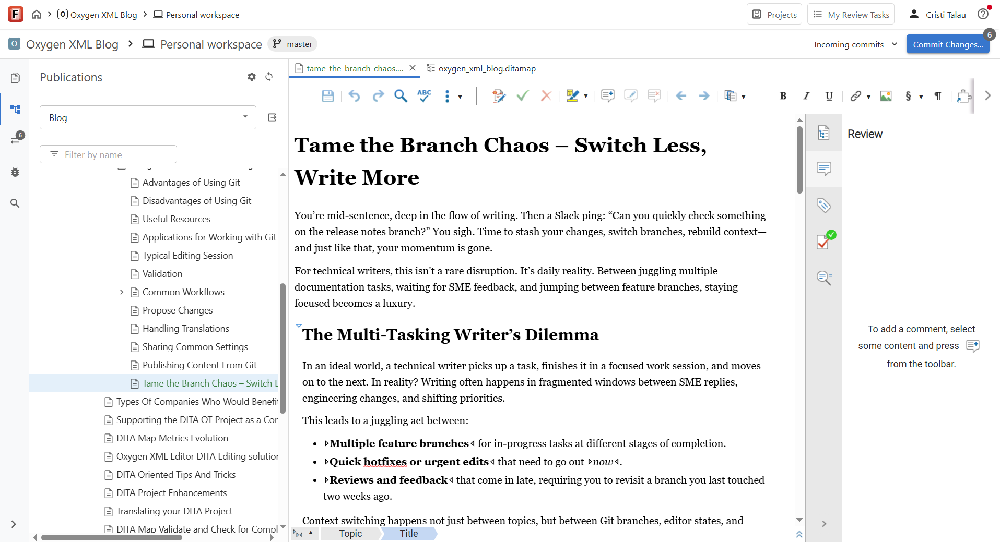
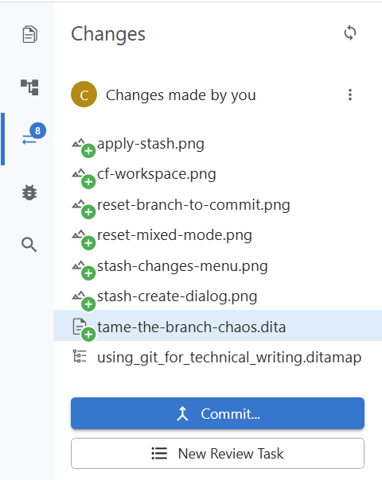

Tame the Branch Chaos – Switch Less, Write More
You’re mid-sentence, deep in the flow of writing. Then a Slack ping: “Can you quickly check something on the release notes branch?” You sigh. Time to stash your changes, switch branches, rebuild context—and just like that, your momentum is gone.
For technical writers, this isn't a rare disruption. It’s daily reality. Between juggling multiple documentation tasks, waiting for SME feedback, and jumping between feature branches, staying focused becomes a luxury.
The Multi-Tasking Writer’s Dilemma
In an ideal world, a technical writer picks up a task, finishes it in a focused work session, and moves on to the next. In reality? Writing often happens in fragmented windows between SME replies, engineering changes, and shifting priorities.
This leads to a juggling act between:
- Multiple feature branches for in-progress tasks at different stages of completion.
- Quick hotfixes or urgent edits that need to go out now.
- Reviews and feedback that come in late, requiring you to revisit a branch you last touched two weeks ago.
Context switching happens not just between topics, but between Git branches, editor states, and mental models.
Each time you need to switch branches, you face a decision tree:
- Do you commit half-finished work?
- Do you stash and risk conflicts later?
- Do you clone the whole repository again into another folder?
This constant overhead takes a toll: it interrupts focus, slows down delivery, and makes a high-cognitive-load job even harder. Writers end up spending more time managing branches than actually writing.
Four Ways to Juggle Branches
When you're deep in documentation work and need to temporarily switch to another branch, you have a few options. Some are more elegant than others—but each comes with its own trade-offs.
Let’s walk through the most common approaches, what they involve, and where things can go wrong.
The Git Stash Dance
Stash your current changes, switch to the other branch, then come back and re-apply the stash.
Workflow in Oxygen:
- Stash your local changes
- If you haven't already, install the Oxygen Git Client Add-on
- In the Git Staging view, open the triple dots
menu and choose Stash changes

- 
- Switch the branch
- Make quick edits, commit or push as needed
- Switch back to the original branch
- Apply the stash
- In the Git Staging view, open the triple dots menu and choose List changes
- 
CLI workflow
git stash push -u -m "WIP on 'master' - taming the branch chaous [27 Mar 2025]"
git checkout release-notes-branch
# Make quick edits, commit or push as needed
git checkout master
git stash pop- Make sure to leave the "Include untracked files" checkbox on, as it is by default. Otherwise, some newly added files may not be included in the stash.
- Always preview stashes before applying.
- Include the branch name in the stash name. This way, you avoid applying the stash on the wrong branch.
- Include the date in the stash name. This way you can cleanup old stashes with confidence.
Temporary WIP Commit
Quickly commit your in-progress work to get it out of the way.
Oxygen Workflow
- Stage and commit all the local changes
- Switch the branch
- Make quick edits, commit or push as needed
- Switch back to the original branch
- Open the history view & filter commits by
"Current local branch"
- 
- Reset branch to the parent commit with "mixed mode"
- 
git add .
git commit -m "WIP: halfway done with config docs"
git checkout release-notes-branch
# Do your other work
git checkout master
git reset HEAD~1 --mixed- If working with others on the same branch, do not push! Your local commits may affect rebases or create confusion.
- When undoing the commit, make sure you have the "mixed" option checked.
Checkout in a Separate Folder
Create another working directory with a separate clone. This approach is simple to understand but is heavy - you duplicate the entire repository and is not uncommon for companies to have multi-gigabyte repositories.
As a mitigation, Git introduced the worktree command which allows
you to reuse the .git folder between multiple working copies. For
example, the working copy of the Oxygen's user guide has ~250MB and the
.git folder is ~200MB of them.
To use this feature you need to go to the terminal and work with these commands:
# From your repo root
git worktree add ../release-notes release-notes-branch
cd ../release-notes
# Make your changes and commit them
cd ../my-main-repo
worktrees are fantastic for
long-lived parallel work. Just don't forget where each copy lives and to remove
them once you are done: git worktree remove
../release-notes. Oxygen Content Fusion Workspaces
Oxygen Content Fusion is a web-based Git-enabled DITA CMS providing structured content authoring, AI-assisted refinement via Oxygen AI Positron, and publishing.
One of its benefits for an author is that you can create multiple lightweight authoring workspaces in your browser, for any branch, and switch between them by just switching browser tabs. Unlike multiple checkouts, workspaces don’t duplicate files. They’re created instantly without copying any content, and with minimal overhead.
Workflow in CF:
- Stay on your current task in your authoring tool.
- In Content Fusion, select a different branch to create a new workspace.
- 
- Edit or review content independently from your current Git state.
- Commit changes when you are ready
- 
- ... or just leave the changes there, and switch to some more urgent work
How Do You Handle Branch Chaos?
Every technical writer has their own way of dealing with the Git shuffle. Maybe
you’re a stash master. Maybe you keep six cloned repositories open
at all times (no judgment). Or maybe you’ve found a completely different workflow
that works for your team.
We’d love to hear from you:
- Which approach saves you the most time?
- Have you tried Git
worktrees or Content Fusion workspaces? - What’s the weirdest branch-juggling ritual you’ve developed?